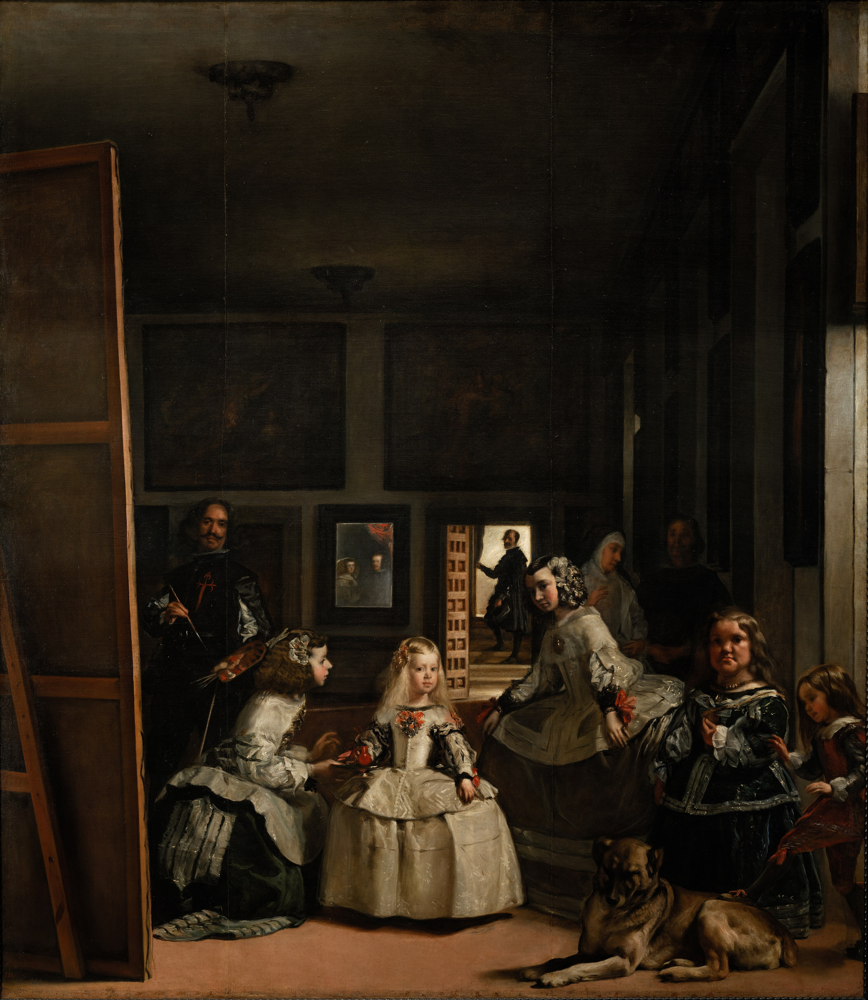

Sesli rehber · Dinleyerek bak
Nedimeler
Diego Velázquez · 1656
Beş ayrıntı ve hikâyesiyle saray atölyesinin içinde sakin bir yürüyüş.
Tur tamamlandı
En çok neye baktın?
4 ayrıntı · 5 dakikalık sesli bakış